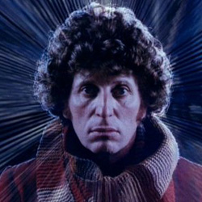

|
The OriginsDoctor Who is a British science-fiction television programme produced by the BBC from 1963 to the present day. The programme depicts the adventures of the Doctor, a Time Lord—a time-travelling humanoid alien. He explores the universe in his TARDIS, a sentient time-travelling space ship. Its exterior appears as a blue British police box, which was a common sight in Britain in 1963 when the series first aired. Along with a succession of companions, the Doctor faces a variety of foes while working to save civilisations, help ordinary people, and right wrongs. The show is a significant part of British popular culture,[2][3] and elsewhere it has become a cult television favourite. The show has influenced generations of British television professionals, many of whom grew up watching the series.[4] The programme originally ran from 1963 to 1989. After an unsuccessful attempt to revive regular production in 1996 with a backdoor pilot in the form of a television film, the programme was relaunched in 2005 by Russell T Davies who was showrunner and head writer for the first five years of its revival, produced in-house by BBC Wales in Cardiff. The first series of the 21st century, featuring Christopher Eccleston in the title role, was produced by the BBC. Series two and three had some development money contributed by the Canadian Broadcasting Corporation (CBC), which was credited as a co-producer.[5] Doctor Who also spawned spin-offs in multiple media, including Torchwood (2006–11) and The Sarah Jane Adventures (2007–11), both created by Russell T Davies; K-9 (2009–10); and a single pilot episode of K-9 and Company(1981). There also have been many spoofs and cultural references of the character in other media. Twelve actors have headlined the series as the Doctor. The transition from one actor to another, and the differing approach to the role that they bring, is written into the plot of the show as regeneration into a new incarnation, a life process of Time Lords through which the character of the Doctor takes on a new body and, to some extent, new personality, which occurs after sustaining injury which would be fatal to most other species. While each actor's portrayal differs, they are all intended to be aspects of the same character, and form part of the same storyline. The time-travelling nature of the plot means that on occasion, story arcs have involved different Doctors meeting each other. Peter Capaldi took on the role after Matt Smith's exit in the 2013 Christmas special, "The Time of the Doctor".[6] |
|
Julia Schwartz Ann Marie Skjold |
Content derived from the Doctor Who Wikipedia |